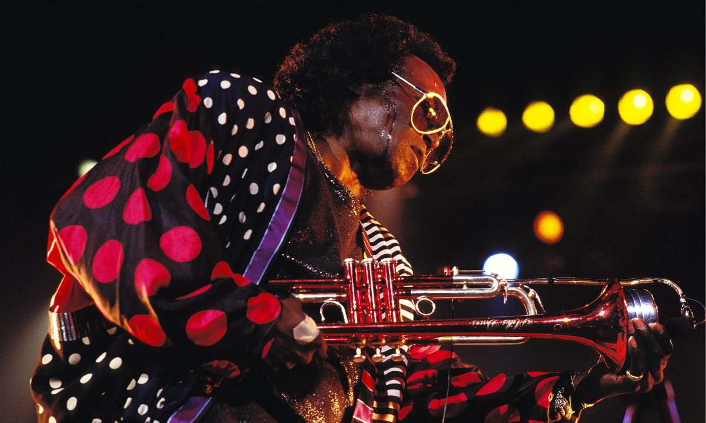
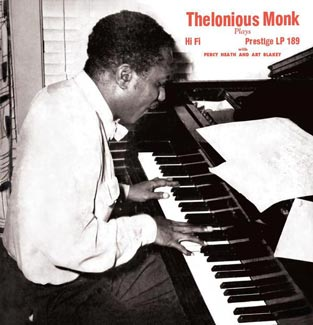

Video of Choice Today
Miles Davis - Montreux Jazz Festival - 21 July 1989?
-
Industry
-
 Cool jazz and modal jazz
Written and fact-checked by The Editors of Encyclopædia Britannica
During the early 1950s Davis struggled with a drug addiction that affected his playing, yet he still managed to record albums that rank among his best, including several with such jazz notables as Sonny Rollins, Milt Jackson, and Thelonious Monk.
-
Miles Davis - Kind of Blue, Albums & Songs
By Michael Ochs Archives
Instrumental in the development of jazz, Miles Davis is considered one of the top musicians of his era. Born in Illinois in 1926, he traveled at age 18 to New York City to pursue music.
-
-
Technical
-
 Thelonious Monk
Written and fact-checked by The Editors of Encyclopædia Britannica
Thelonious Monk, in full Thelonious Sphere Monk, American pianist and composer who was among the first creators of modern jazz.
-
The demons and obsessions of jazz genius Thelonious Monk
By Candace Allen
He was a dedicated family man who worried about providing for his wife and children, but couldn’t give an inch.
-
-
Career
-
My Time with Kurt Cobain
By Michael Azerrad
It was dusk when a taxi dropped me off at his place. Courtney greeted me at the door and graciously offered me a plate of grapes.
-
Grunge rock icon Kurt Cobain dies by suicide
By History.com Editors
Modern rock icon Kurt Cobain dies by suicide on April 5, 1994. His body was discovered inside his home in Seattle, Washington, three days later by Gary Smith, an electrician, who was installing a security system in the house.
-